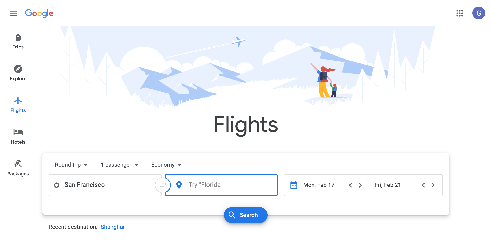
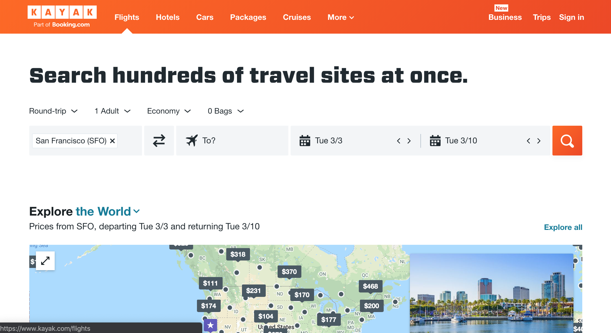
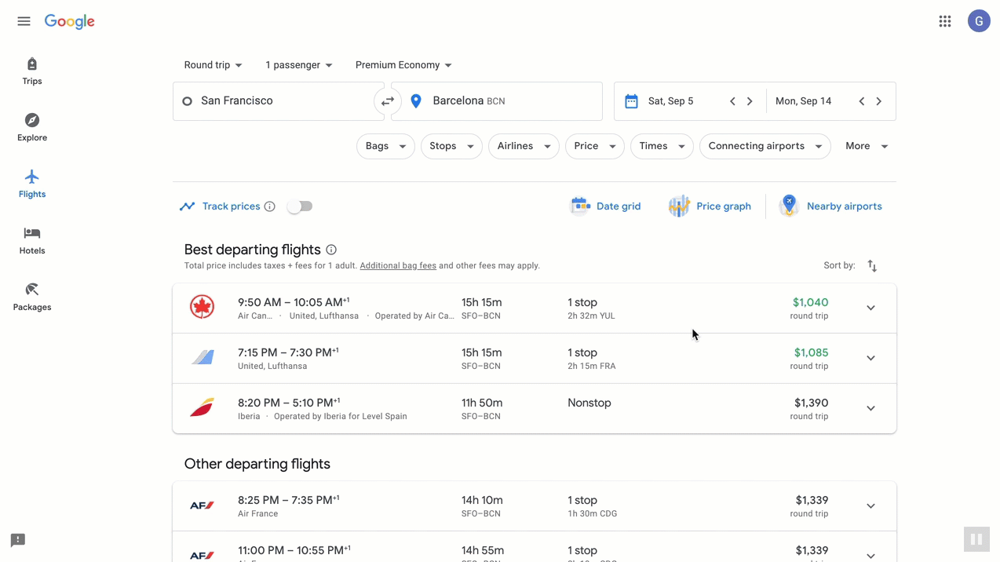
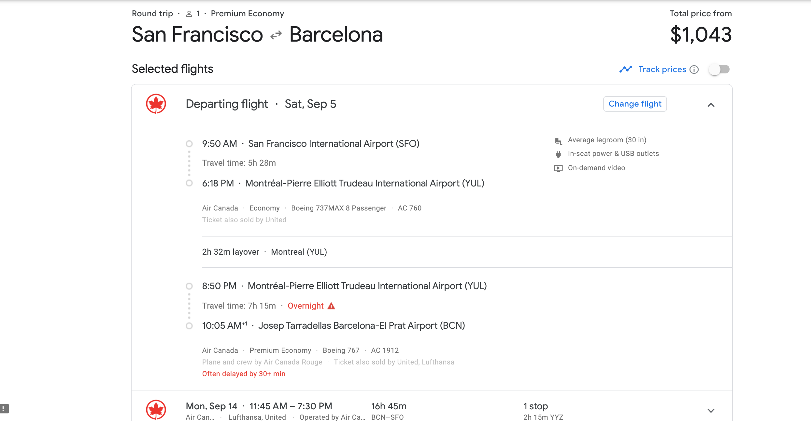

My name is Gabriel. I was born in the Philippines but grew up in southern California. Unfortunately, my mom didn't like to travel much, so my childhood experiences were limited mainly to southern California. Thanks to books, movies, and television as well as stories from friends and family, I dreamt of traveling throughout the U.S. and the world. My first step in traveling on my own was in high school when I attended a boarding school in San Jose, California. On weekends I used public transit to explore the nearby cities in the San Francisco Bay Area. I attended a college in Massachusetts so that I can explore the east coast. During school breaks and summer vacations, I traveled around New England and the mid-Atlantic states by car, bus and train. After college I returned to the San Francisco Bay Area where I continue to travel near and far whenever I have free time and enough money.
Traveling allows me to meet people and experience places that I heard about from personal stories, read about in books and magazines, and seen in movies and on television. For example, I wandered around Shanghai looking for what landmarks remained in the American zone that existed before World War II to get an idea of what my father may have seen when he was a little boy. I was fascinated when I saw up close in what was then a divided Berlin how a wall divided a city, and how a massive fence divided an entire country from north to south. I was happily stuffed to the gills and pleasantly drunk in Paris after eating a delicious and memorable four-course lunch with its accompanying wine pairings at a three-star Michelin restaurant run by a famous French chef.
Nighttime Shanghai along Huangpu River.Section of the Berlin Wall.Haute cuisine dish.
A Journey Begins with Planning
For me I plan for my next trip by answering some basic questions: Where will I go? How will I get there and back? Where will I stay? What will I do when I'm there? What do I want to eat when I'm there? What do I avoid when I'm there? What time of year is a good time to visit? How much will it cost for transportation, accommodations, food, and other expenses? Does my destination require a visa, any vaccinations or any special documents?
Deciding where to go can be a difficult decision. Ideas for travel destinations are often inspired by others' life stories, the media, your imagination, and even random chance. Once you have chosen your destination, you'll need to figure out how to get there. For the sake of simplicity, let's imagine that you want to visit Barcelona, Spain. That means you'll need to do some research about flights to Barcelona and how much they cost. The easiest and simplest way to do research is to use online flight search services.
Flight Tools for Travel Planning
I like using two flight search services, Google Flights and Kayak, for researching which airlines fly to my destination and when. Flights there or back may not be available for every day of the week, and may have departures only during specific times of the day or night. Airlines may offer only seasonal service which means an airline will fly to a destination only part of the year. The minimum set of information needed by a travel search engine is departure city, destination city, departure date, and return date. By default, most travel search engines have "economy" selected for the class of service, and "roundtrip" for the type of airline ticket. These two parameters normally offer the cheapest ticket prices.

Google Flights search page.

Kayak Flights search page.
How to Use a Google Flights Search Tool
I'll use Google Flights, which offers a simple user interface, to illustrate how I search for available flights that offer the lowest ticket prices, and aircraft with the most comfortable seats. An example of a trip that I wish to make is a 10-day roundtrip to Barcelona, Spain. I will arrive on Saturday, September 5, 2020, and return on Monday, September 14, 2020, in the "premium economy" travel class. A basic search is outlined in the steps below.
Finding Flights to Your Destination
Navigate to the Google Flights page on your browser tab.
Enter the following information in the search fields listed below.
Ticket type = "Round trip"
Fare class = "Premium Economy"
Departure city = "San Francisco", often abbreviated using its 3-letter airport code, "SFO".
Destination city = "Barcelona", often abbreviated using its 3-letter airport code, "BCN".
Departure date = "5 September 2020"
Return date = "14 September 2020"
Entering search parameters on the Google Flights search page.
Analyze the search results to see which are the top three "Best departing flights" displayed at the top of the search results, and what are the other departing flights listed below the top three flights.
Find the lowest fares listed.
The lowest fares may be for itineraries with one or more stops, very long waits at connecting airports, and for departure times that are either very early in the day or very late at night.
Notice the estimated travel time for the lowest fares.
The lowest fares may have the longest estimated travel times, i.e., the duration of time starting from the initial departure time and ending at the final arrival time. It should include time spent at any airports waiting for the connecting flight(s).
Are the lowest fares for "nonstop" flights, or do they have one or more stops?
Nonstop flights are the most desirable for most people because trips with connecting flights require hiking from one terminal gate to another at a connecting airport within the specified connection time. Catching a connecting flight on a domestic trip is simple; just walk from the arrival gate to the departure gate. International trips connecting at a foreign airport typically requires a security screening of you and your carry-on luggage, and a passport check in addition to hiking from one gate to another.
Check which airport is used for the connecting flight(s) if the flight option has one or more stops.
Click the down-arrow () link for a flight option to see its details which include departure and arrival times, total travel time, airline name, aircraft type, and ticket class.
Click an outbound flight, and then a return flight.

Selecting outbound and return flights on the Google Flights search page.
Analyze the selected itinerary which provides departure and return flight information as well as luggage restrictions.
Is the desired travel class, "Premium Economy", available for each leg of the journey?
Is the aircraft listed a narrow-body (single aisle) or wide-body (double aisle) aircraft?
The wide-body planes may offer wider seats than narrow-body planes, but not always depending upon the class of service. SeatGuru provides aircraft seat maps by airline and aircraft type in addition to passenger reviews and seat dimensions. The website's information is not always accurate but it's a good place to start your research.
Is there a connecting flight? If so, is the connection time is short, e.g., less than 50 mins., or long, e.g., ten hours?
Minimum connection or transfer times vary by airport and airline. Conde Nast Traveler magazine explains this common concern in this 2018 article.

Details of outbound flights on Google Flights itinerary page.
Repeat steps 1 to 6 several times for different airlines and different travel dates to get an idea if lower prices, nonstop flights, the desired travel class and more desirable departure times are available.
What to Do With Your Flight Data
Google Flights offers useful features like fare graphs to see if how airfares for the given destination vary up to nine to ten months in the future, and fare tracking to alert the user when the airfare is going up or down. I try to start checking airfares as soon as data is available, and buy my ticket at least three to five months before my departure date. Depending upon the destination, flights may be sold out months before departure especially during the summer and holiday months from mid-November to early January. Ticket prices can be affected temporarily by airline sales, so fare tracking alerts can notify you of possible deals which depending upon the destination may occur unexpectedly or with some frequency if your destination is serviced by lots of airlines especially low-cost airlines like Norwegian or LEVEL.
Where to Go From Here
After I have my flight information, I start researching answers to my remaining questions: Where do I stay? What will I do there? What are any entry requirements? A great place to start is TripAdvisor which has travel articles and forums where readers share information that you may find useful. Some of the information may be outdated or inaccurate, but it can provide leads to "official" websites that provide more reliable information. Travel guides and forums by Rick Steves and Lonely Planet also provide useful travel information depending upon your destination.